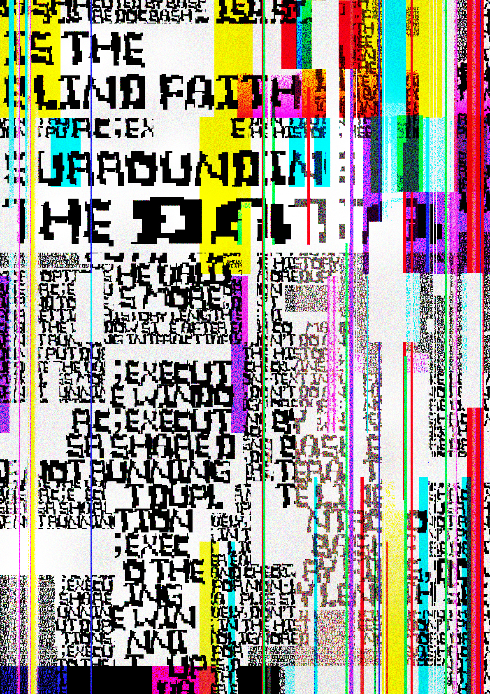

The project draws new graphics through a three-step process. We developed our own design frame, starting with pictures, and creating a new type of alphabet. And finally, it created a poster, an expanded image from graphic characters.
I think this project is meaningful in getting creative ideas through new processes, not through existing familiar design processes. It is also believed that the use of grids and extracted parameters created based on images has developed a new design framework and that analog form analysis has enabled the presentation of various images in newly formed forms.
Finally, I hope it was a new experience for everyone who watched the exhibition, and I thank the team members who participated in the preceding project and poured a lot of passion into the design.
